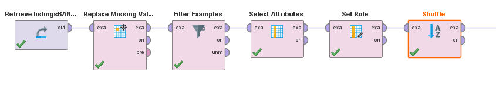

Inicialmente me plantee la situación de partir no de un problema ya identificado y plantear posibles soluciones sino que a partir de un conjunto de datos que pudiera ser interesante identificar posibles usos que se le podrían dar a los datos procesados para mejorar algún proceso, identificar problemas y solucionarlos, aumentar ganancias de una empresa, etc. Encontré datasets públicos obtenidos a partir del uso de la plataforma de alquiler de alojamientos Airbnb. Los dataset corresponden a distintas ciudades donde funciona el servicio. Algunas de las ciudades que tienen datasets disponibles en la web son: Amsterdam, Barcelona, Buenos Aires, Londres, Roma, etc. Para realizar un estudio de los atributos se selecciona el dataset de Buenos Aires y lo cargo en RapidMiner.
El dataset está compuesto por más de 20000 datos con un total de 16 atributos obtenidos desde el siguiente link
datasets Airbnb http://insideairbnb.com/get-the-data.htmlId es un entero que identifica a la publicación
Name es un texto que corresponde a la descripción de la publicación
Host id es un entero que identifica al dueño de la publicación
Host name es un texto con el nombre del dueño de la publicación

No existe ni descripción ni datos para este atributo
Barrio al que pertenece la publicación, definido como polinominal

Latitud y longitud de la ubicación del inmueble
Room type es un valor polinominal que corresponde al tipo de inmueble que se alquila

Price corresponde al valor del alquiler en moneda local. Rápidamente se logra identificar un valor totalmente alejado del resto que no se condice con la descripción de la publicación. Se supone que corresponde a un error de tipeo al ingresar el dato.

Dato erróneo de precio:

Se decide eliminar el dato. También se identifican valores faltantes en precio que son sustituidos por el valor de precio promedio.
Minimum nights dice la minima cantidad de noches que se debe alquilar en el inmuebe
Number of reviews indica la cantidad de reseñas que recibió la publicación hasta el momento

Last review indica la fecha de la última reseña recibida por la publicación

Reviews per month da la cantidad de reviews que recibió la publicación en el último mes
Calculated host listings count es la cantidad de públicaciones que posee cada hospedador

Availability 365 ofrece la disponibilidad en días del inmueble para los próximos 365 días.


Asistir al usuario que crea una nueva publicación a elegir el precio de alquiler adecuado
Identificar sentimiento de las reviews recibidas por un usuario
Identificar tipos de viviendas más comunes por barrioy las más preferidas por los clientes

Identificar momentos del año donde se realizan más reviews(por lo tanto más alquileres y más margen de ganancia al hospedador).
El caso de estudio se basará en la oportunidad de la elección del precio adecuado para un nuevo alquiler
Del atributo reviews_per_month se identifican muchos valores faltantes que se corresponde con publicaciones que no tienen reviews totales por lo tanto se procede a setear dichos atributos como 0.
Observando el tipo de habitación que se alquila y comparando con su precio se puede detectar que los precios más bajos están directamente asociados a habitaciones de tipo privada o compartida, y los precios más altos están asociados a habitaciones de hotel o al alquiler del apartamento/casa completo/a.
Precios más altos:
Precios más bajos:
Por lo tanto se puede suponer que el tipo de habitación tendrá influencia directa en el precio del alquiler.
Se observa de igual manera que el barrio tiene influencia directa en el precio:
Precios más altos:
Precios más bajos:
Al menos en los alquileres más altos se repite el barrio Palermo y Recoleta, en los precios más bajos esta mejor distribuido.
A partir de la identificación de la influencia de dichos atributos en la variable objetivo se seleccionan los atributos: room_type, minimum_nights, neighbourhood, number_of_reiviews, reviews_per_month, availability_365, calculated_host_listing_count y a price como variable objetivo. Se descartan aributos que no aportan a la predicción ya que sirven como identificadores o que no dan información directa como: host_name, descripción de la publicación, host_id, etc. Con un previo tratamiento la descripcion de la publicación podría ofrecer información importante que le agregue valor a la publicación como por ejemplo la cercanía con estaciones/aeropuertos/restaurantes, si cuenta con buena iluminación, la cantidad de camas, etc. De igual manera consultando servicios de información a partir de la ubicación dada por la latitud y la longitud se podrían identificar centros de interés turisticos en la zona, indice de criminalidad, etc. Se realiza en Rapidminer la carga del dataset, el remplazo de valores faltantes, la depuración de datos incoherentes, la selección de atributos y la definicion de la variable objetivo.

El modelo aporta una estimación bastante buena de cuál debería ser el precio dados los atributos disponibles pero sin embargo podría ser mucho más acertado si se contara con más atributos relevantes. Un ejemplo de atributo importante a conocer es si las reviews obtenidas son positivas o negativas, esto se podría lograr si se pudiera acceder a las reviews y a partir de ellas identificar palabras claves que tengan impacto positivo (“excelente”,”muy bueno”, ”perfecto”, “barato”, etc.) o negativo(“malo”, “pésimo”, “caro”, etc.) y así definirla como review positiva o negativa. Como los datos del dataset solamente se tienen la cantidad de reviews no se puede concluir con total certeza que a cuantas más reviews mayor valor va a tener el alquiler ya que podría significar que se alquila mucho por ser barato pero las reviews sean malas y por lo tanto un cliente esperaría pagar menos. Otra posibilidad de mejora al modelo es la posibilidad de tener imágenes de la publicación para mediante redes neuronales identificar si una imagen es de buena calidad